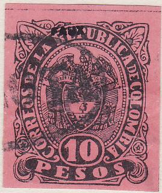

{kind=link}


Return To Catalogue - Colombia overview
Note: on my website many of the
pictures can not be seen! They are of course present in the
catalogue;
contact me if you want to purchase it.
1 c green 1 c red 2 c brown 5 c yellow 10 c violet 25 c black on blue 25 c green
Value of the stamps |
|||
vc = very common c = common * = not so common ** = uncommon |
*** = very uncommon R = rare RR = very rare RRR = extremely rare |
||
| Value | Unused | Used | Remarks |
| 1 c green | * | * | |
| 1 c red | * | * | Issued in 1874 |
| 2 c | * | ** | |
| 5 c | * | * | |
| 10 c | * | * | |
| 25 c black on green | *** | *** | |
| 25 c green | *** | *** | Issued in 1874 |

Typical cancel '8' on 10 c
Reprints exist (also with different colours).


Reprints in different colours

I've been told that this are two 'Michelsen'
reprints with 'BOGOTO' cancel in an ellipse, I've also seen
uncancelled Michelsen reprints
Forgeries:

(The above forgeries are Senf forgeries,
easily recognized by the 'FACSIMILE' overprint, in the right
image somebody has tried to remove this overprint and applied a
forged cancel)
I've been told that the next stamps are forgeries as well:


Forgeries of the 1 c and 2 c values.
Probably the first forgeries of the 25 c described in Album
Weeds. The paper is too blue. The design is different. The last
image shows a similar design shown in the catalogue of Placido Ramon de Torres "Album
Illustrado para Sellos de Correo" of 1879 (information
passed to me thanks to Gerhard Lang, 2016).
5 c lilac
Value of the stamps |
|||
vc = very common c = common * = not so common ** = uncommon |
*** = very uncommon R = rare RR = very rare RRR = extremely rare |
||
| Value | Unused | Used | Remarks |
| 5 c | * | ** | |


1 c black on green (1881) 2 c black on red (1881) 5 c black on lilac (1881) 10 c brown 20 c blue
Value of the stamps |
|||
vc = very common c = common * = not so common ** = uncommon |
*** = very uncommon R = rare RR = very rare RRR = extremely rare |
||
| Value | Unused | Used | Remarks |
| 1 c | * | * | Issued 1881 |
| 2 c | * | * | Issued 1881 |
| 5 c | * | * | Issued 1881 |
| 10 c | * | * | |
| 20 c | * | * | |
Normally these stamps are imperforate, but perforated stamps exist

Nicely perforated 1 c and privately (badly) perforated 5 c values

Blue '8' cancel on 10 c value. I've also seen this cancel in
black on a 5 c stamp of this set.

With '2' straight
1 c green
2 c red ('2' straight)
2 c red ('2' oblique)
5 c blue
10 c lilac
20 c black
Value of the stamps |
|||
vc = very common c = common * = not so common ** = uncommon |
*** = very uncommon R = rare RR = very rare RRR = extremely rare |
||
| Value | Unused | Used | Remarks |
| 1 c | * | * | |
| 2 c | * | * | '2' straight |
| 2 c | * | * | '2' oblique, issued 1883 |
| 5 c | ** | * | |
| 10 c | * | * | |
| 20 c | * | * | |

Fancy 'NEIVA' cancel on 5 c


1 c green on green 2 c red on red 5 c blue on blue 10 c orange on yellow 20 c violet on lilac 50 c brown on yellow 1 P red on grey 5 P brown on yellow 10 P black on red
Value of the stamps |
|||
vc = very common c = common * = not so common ** = uncommon |
*** = very uncommon R = rare RR = very rare RRR = extremely rare |
||
| Value | Unused | Used | Remarks |
| 1 c | c | c | |
| 2 c | c | c | |
| 5 c | ** | c | |
| 10 c | ** | * | |
| 20 c | * | * | |
| 50 c | * | * | |
| 1 P | ** | ** | |
| 5 P | *** | *** | |
| 10 P | *** | ** | |
Imperforate stamps exist (see above). These stamps have been reprinted.
Typical cancel constisting of concentric circles

violet '2' cancel on a 2 c red on red stamp


1 c green on green (eagle) 2 c red (general Sucre) 5 c blue on blue (Bolivar) 10 c orange (president Nunez) 20 c violet on blue (general Narino, wrong inscription 'Repulica') 20 c violet on blue (general Narino, right inscription 'Republica') 50 c brown on yellow (eagle) 50 c violet on lilac (eagle, 1892) 1 P red (eagle) 5 P brown (eagle, erroneous colour) 5 P black (eagle) 5 P red on red (eagle, 1892) 10 P black on red (eagle) 10 P blue (eagle, 1892)
Value of the stamps |
|||
vc = very common c = common * = not so common ** = uncommon |
*** = very uncommon R = rare RR = very rare RRR = extremely rare |
||
| Value | Unused | Used | Remarks |
| 1 c | c | c | |
| 2 c | * | * | |
| 5 c | c | c | |
| 10 c | * | * | |
| 20 c | * | * | 'REPUBLICA' |
| 20 c | * | * | 'REPULICA' |
| 50 c brown on yellow | * | * | |
| 50 c violet on lilac | * | * | Two types: '50 CENTAVOS' different |
| 1 P | ** | ** | |
| 5 P brown | *** | *** | |
| 5 P black | ** | ** | |
| 5 P red on red | ** | ** | |
| 10 P black on red | *** | ** | |
| 10 P blue | ** | ** | |

A 5 c with a violet 'Flower cancel'.
In the 'Fournier Album of Philatelic Forgeries', some forgeries can be found of the 10 P black on red and 10 P blue (perforated and imperforate). In my opinion, the first 'S' of 'PESOS' is different.
Fournier forgeries from the Fournier Album (with 'FAUX'
overprint), reduced sizes

Fournier forgery of the 10 P value with 'FAUX' overprint.
{kind=link}
{kind=link}